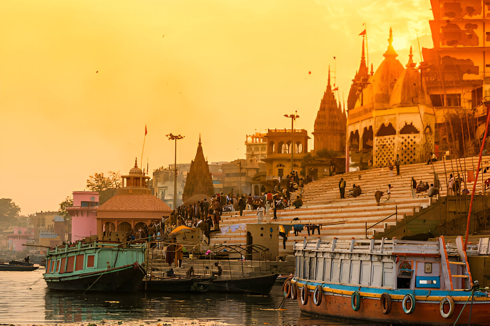

About Varanasi, Uttar Pradesh (The Spiritual Capital of India)
Varanasi is one of the oldest continuously inhabited cities in the world. It is known for its spiritual significance, ancient temples, and the sacred Ganges River.
Popular Spots
- Dashashwamedh Ghat
- Kashi Vishwanath Temple
- Sarnath